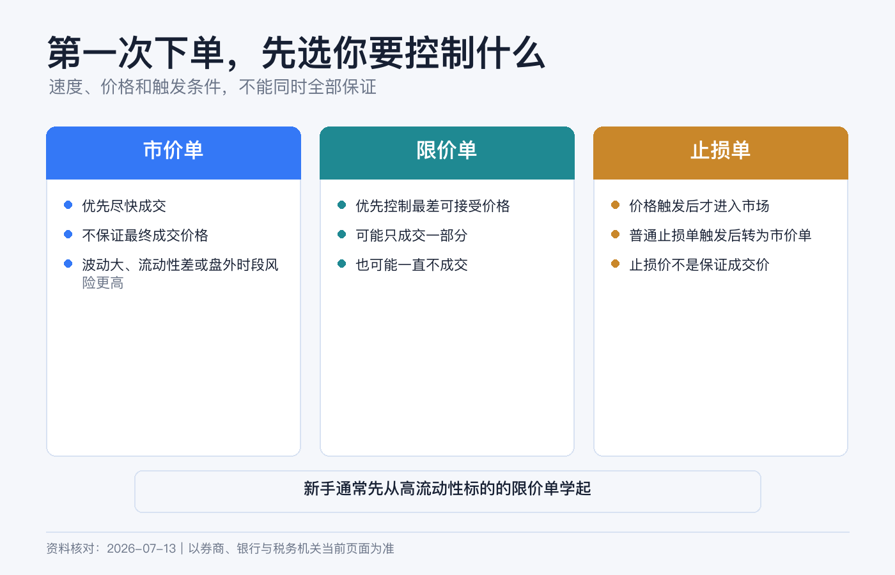
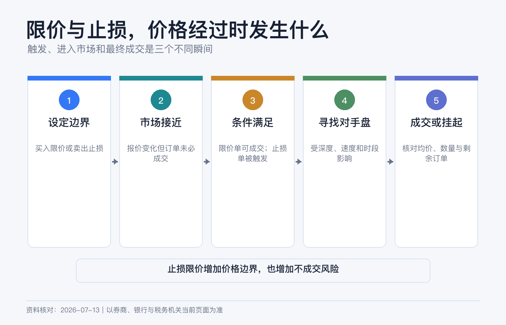

第一次下单怎么选：市价单、限价单、止损单和有效期
第一次下单，真正要选的不是一个“最好的订单类型”，而是你愿意承担哪一种风险：为了尽快成交，接受价格不确定；为了锁定最差价格，接受可能不成交；还是等价格触发后，再在成交确定性和价格保护之间取舍。
把这三个问题想清楚，市价单、限价单和止损单就不再是一排陌生缩写。
本文为基于公开资料的股票/ETF 基础订单教育，不构成投资、税务或法律建议，也不构成证券推荐、交易或止损建议。订单类型、触发方法、可用交易时段和有效期会因券商、市场、产品和路由而不同；本文不展示作者真实订单、止损或成交结果。界面入口以当前 Client Portal、App 或桌面端为准，提交前以订单预览和合约规则为准。资料核对日期：2026-08-23。

查看原图（新窗口，可缩放）
下单前先看三种价格
以下报价和后文的跳空价格都是教学假设，不是实时行情、作者订单或交易建议。假设一只 ETF 页面显示：
| 报价 | 价格 |
|---|---|
| Bid / 买方最高报价 | 99.90 美元 |
| Ask / 卖方最低报价 | 100.10 美元 |
| Last / 最近一笔成交价 | 100.00 美元 |
买入时参考 Ask，卖出时参考 Bid，而不是仅看 Last；但显示报价不是成交承诺，还要看报价数量、行情时效、其他订单和可访问的交易场所。Bid 与 Ask 的差额叫买卖价差。Last 只是过去发生的一笔交易，在快速波动、盘前盘后或行情延迟时，可能早已不能代表可成交价格。
第一次下单前，至少确认行情是否实时、买卖价差是否正常、当前是否处于常规交易时段。否则即使订单数量填对，也可能在错误的价格环境中执行。
四种订单，一张表看懂
| 订单 | 何时进入市场 | 价格保护 | 主要风险 |
|---|---|---|---|
| Market / 市价单 | 立即按当时可得价格寻求成交 | 没有 | 滑点，可能分多档成交 |
| Limit / 限价单 | 只在限价或更优价格成交 | 有 | 可能一直不成交或只成交一部分 |
| Stop / 止损单 | 触及止损价后变成市价单 | 触发后没有 | 成交价可能远离止损价 |
| Stop Limit / 止损限价单 | 触及止损价后变成限价单 | 有 | 价格跳过限价后可能完全卖不掉 |
市价单：优先成交，不保证价格
市价单的目标是尽快与市场上可用报价成交。IBKR 和 SEC 的投资者资料都强调：它提高成交概率和速度，但不提供价格保护，最终价格可能高于或低于当前显示的买卖报价。
继续使用上面的例子。你提交小额市价买单，若盘口稳定，可能接近 100.10 美元成交。但如果你一次买很多、卖盘很薄，第一部分可能在 100.10，剩余部分继续吃到 100.20、100.40；若出现新闻、停牌后复牌或行情故障，偏差会更大。
市价单并非永远不能用。对于常规时段内、流动性充足、价差很小、数量相对盘口很小的证券，投资者可能更看重尽快成交。但这是优先寻求成交，不是能控制成交速度；停牌、市场关闭或订单被拒绝等情况仍可能阻止执行。
以下场景尤其不适合轻率使用市价单：盘前盘后、冷门股票、低价股、期权、盘口很薄、重大新闻前后，以及订单相对成交量很大时。
限价单：控制最差价格，不保证成交
限价买单规定“最多愿意付多少”，限价卖单规定“最低愿意收多少”。买入限价 100.05，意味着只能在 100.05 或更低成交；卖出限价 100.05，则只能在 100.05 或更高成交。
这也解释了两个常见误解：
1. 限价 100.10 的买单不是“必须按 100.10 买”，有更低报价时可以获得更优价格。 2. 市价碰到 100.05 不等于你的订单必然成交。你前面可能已有排队订单，市场也可能只短暂成交很少数量。
第一次买一只流动性好的股票或 ETF，如果目标只是先熟悉流程，可把小额、常规时段和 DAY 限价单作为需要理解的保守示例。限价可参考实时 Ask 和自己能接受的最高价，而不是为了省几分钱把价格挂得很远，最后误以为系统坏了。

查看原图（新窗口，可缩放）
止损单：止损价只是开关
持有一只股票，现价 100 美元，你设置 95 美元的卖出止损单。市场达到券商规定的触发条件后，系统会提交市价卖单。
关键句是：95 美元是触发价，不是保证成交价。
如果股票隔夜从 100 直接跳空到 92，止损单触发后可能在 92 附近甚至更低成交。SEC 还提醒，不同券商和交易场所可能使用最新成交、Bid、Ask 或其他方法判断是否触发；IBKR 也会根据产品采用不同触发方式，并可能模拟某些止损订单。
所以止损单解决的是“达到条件后尽快退出”，不是“最多只亏到某个数字”。短暂波动也可能触发订单，随后价格又反弹。
止损限价单：避免卖得太低，但可能卖不掉
还是持有现价 100 美元的股票，你设置：
- Stop 触发价：95 美元；
- Limit 最低卖价：94.50 美元。
满足适用触发条件后，系统激活一张最低 94.50 才卖的限价单。若市场在 94.80 有足够买盘，可能成交；若跳到 92 且没有达到限价的买盘，就可能无法成交。未成交部分是否继续保留，还取决于有效期、交易时段及撤单状态，不能假定会无限等待。
止损单与止损限价单没有谁绝对更安全：
- 止损单承担成交价格不确定，换取更高退出概率；
- 止损限价单承担可能无法退出，换取价格下限。
第一次下单若只是买入长期持有的 ETF，不必为了“功能完整”同时上止损、跟踪止损和括号单。先在模拟账户理解触发、部分成交和撤单，再决定真实账户是否需要。
有效期决定订单能活多久
订单类型决定“用什么价格规则成交”，Time in Force / TIF 决定“这张订单保留多久”。二者要一起设置。
DAY：当前交易日有效
DAY 订单通常在适用交易日的交易时段结束后取消未成交部分，不自动延续到下一交易日。不要把“当天”理解成所在地午夜；应核对目标市场日历、订单适用时段和平台显示的到期时间。
DAY 不自动等于盘前盘后也有效。是否允许 Outside Regular Trading Hours 通常是单独选项，且不同订单类型未必支持扩展时段。
GTC：取消前有效，但不是永久有效
GTC 会跨交易日继续工作，直到成交或取消，但券商通常有最长保留期限和自动取消规则。
IBKR 的 GTC 教程说明，订单通常会在创建季度之后的下一个日历季度末自动取消，并在提交时显示 Auto Cancel Date 的具体日期和时间。例如第三季度创建的订单，教程示例对应第四季度末，而不是固定保留 90 天。
这个到期提示不是“此前一定持续有效”的保证。分红、拆股等公司行动以及账户或订单状态变化，都需要重新核对券商的处理说明；不要自行假定价格一定自动调整或旧单一定撤销。修改订单后，也应再次查看实际到期时间和确认记录，不沿用旧截图。
因此挂出 GTC 后仍要定期复查。公司行动、分红、基本面变化和你自己的资金计划，都可能让旧价格失去意义。
GTD、IOC 和 FOK：知道用途即可
- GTD / Good-Til-Date：到指定日期或时间前有效，适合有明确截止日的计划；可用平台因产品而异。
- IOC / Immediate-or-Cancel：立即成交能成交的部分，其余取消。
- FOK / Fill-or-Kill：必须立即全部成交，否则整单取消。
后两种更偏执行约束。第一笔普通股票交易通常不需要为了显得专业而使用。
盘前盘后不是一个普通复选框
IBKR 订单票据可能显示 Fill Outside RTH。开启后，符合条件的订单可以在常规交易时段之外触发或成交，但这会改变你的成交环境：参与者更少、价差更宽、价格更容易跳动，且并非所有订单和产品都支持。
有效期与允许交易时段是两个维度：GTC 不等于全天候成交，DAY 也不能单独证明包含盘后。以具体合约、路由和订单类型支持的时段为准，不能把一个 Outside RTH 选项推断为所有市场的夜盘权限。
FINRA 提醒，扩展时段可能有更低流动性和更高波动。IBKR 也特别提示在盘前盘后谨慎使用市价单。第一次真实下单，建议把范围收窄到常规交易时段，并使用实时 Bid/Ask 做判断。
在 IBKR 完成第一张订单
当前 Client Portal 官方教程的路径是 Trade > Order Ticket。App 或桌面端布局会变化，但订单票据的核心字段相同。
第一步：选对合约
用代码或公司名搜索后，核对资产类型、上市市场和交易货币。名称相同、代码相近或不同交易所的证券，可能不是同一张合约。
如果目标是普通 ETF，可先按第一次 ETF 买入的产品与订单核对流程确认基金和挂牌市场；如果目标是美国国债，则要进一步按IBKR 美国国债下单界面的字段顺序确认到期日、CUSIP 和报价方向。
第二步：先看 Bid、Ask 和行情状态
确认行情是否实时、当前交易时段、价差和大致盘口。只有 Last 而没有可靠的 Bid/Ask 时，不要急着用市价单。
第三步：填写方向和数量
检查 Buy / Sell，以及单位是股数还是金额。若使用碎股或按金额下单，还要确认该证券和账户是否支持。
第四步：选订单类型与有效期
新手练习路径可以是：流动性较好的股票或 ETF、小额、Limit、DAY、不开 Outside RTH。限价写下自己能接受的最高买价或最低卖价。
第五步：提交前先 Preview
当前 Client Portal 的 Preview 可显示交易后的账户余额预测。核对：方向、数量、限价或止损价、TIF、交易时段、预计金额、佣金、货币和保证金影响。
这是本文建议的检查步骤，不是说平台一定强制预览。官方教程同时提供直接 Submit Order 的操作；预览只是当时条件下的估算，不能锁定费用、保证金要求或成交结果。未显示的费用或字段，应另查适用说明，不凭空视为零。
第六步：提交后继续看状态
Submitted 不是 Filled。到 Orders & Trades 检查是否已成交、部分成交、被拒绝或仍在等待；部分成交后，剩余数量可能继续挂单。若不再需要，主动取消并确认状态变成 Canceled。
点击取消只是发送请求。IBKR 的订单状态说明明确提醒，撤单等待确认期间仍可能成交。因此还需核对成交明细和剩余数量；取消剩余挂单不会撤销已完成的成交。旧单状态未明确前，不要把重新下一张单当作无风险替换。
八项提交前检查清单
- 代码、资产类型、交易所和货币都正确。
- Buy / Sell 没有选反。
- 数量单位是股数还是金额已经确认。
- 我看的是实时 Bid/Ask，而不只看 Last。
- 我能说清这张单优先成交还是优先价格。
- DAY、GTC 或其他有效期符合计划。
- Outside RTH 是否开启是有意选择。
- Preview 中费用、现金和保证金影响可接受。
限价约束的是证券成交价，佣金、税费和换汇等仍须另算。
参考资料
- U.S. SEC Investor.gov, Investor Bulletin: Understanding Order Types.
- FINRA, Trading Terms: Time Parameters and Qualifiers on Stock Orders.
- FINRA, How Online Stock Trading Works.
- Interactive Brokers, Order Types and Algos.
- Interactive Brokers, Good-Til-Canceled (GTC) Order.
- Interactive Brokers, Client Portal – Enter a Trade.
- Interactive Brokers, Outside Regular Trading Hours.